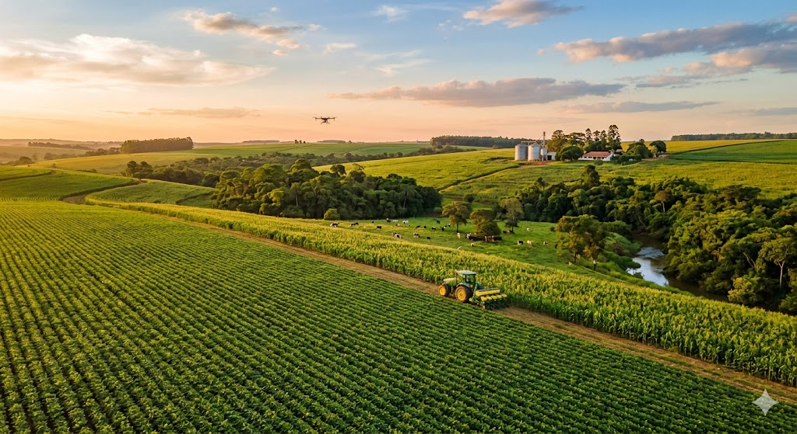

Agro Forte, Futuro Sustentável🌾
O equilíbrio perfeito entre a força da produção e a preservação do meio ambiente 🌍

Produzir Mais, Impactar Menos
Como a tecnologia e a eficiência movem o campo sem avançar sobre as florestas.
A força do agro brasileiro não se mede mais pela quantidade de terra desmatada, mas pela inteligência aplicada em cada hectare. Através da agricultura de precisão, drones, sensores e inteligência artificial analisam o solo em tempo real, permitindo o uso exato de água e nutrientes, evitando desperdícios.
Guardiões da Biodiversidade ♻️👨🌾
Não existe economia sem ecologia. O solo vivo e a água limpa são as ferramentas de trabalho do agricultor. Práticas modernas mostram que a preservação ambiental é aliada do lucro e da sobrevivência do planeta.
Destaques de Práticas Sustentáveis:
- ILPF (Integração Lavoura-Pecuária-Floresta): Um sistema que une árvores, gado e plantações na mesma área, sequestrando carbono e recuperando pastagens degradadas.
- Plantio Direto: Cultivar sobre a palha da colheita anterior, protegendo o solo contra a erosão e mantendo a umidade.
- Preservação de APPs e Reservas Legais: Proteger as matas ciliares e as fontes de água que abastecem as cidades e o próprio campo
A Ciência e o Jovem no Comando do Futuro 👨🌾🚜
Onde a tradição do campo encontra a inovação da nova geração.
O futuro sustentável já começou. As escolas, os filhos dos agricultores e os centros de pesquisa (como a Embrapa) estão redesenhando a história do campo. A sustentabilidade deixou de ser um conceito abstrato e se tornou métrica: rastreabilidade de alimentos, créditos de carbono e energia limpa (solar e biomassa) movendo as fazendas.
💡 Você sabia?
Antigamente, para saber se uma plantação precisava de água ou estava doente, o agricultor precisava caminhar por hectares examinando folha por folha. Hoje, satélites no espaço e drones com câmeras termais conseguem "enxergar" o estresse de uma planta antes mesmo que o olho humano consiga notar qualquer mudança de cor nela. Isso economiza até 30% de água e defensivos, protegendo o solo e acelerando a colheita!
Você é um agro-sustentável? ♻️
Teste seus conhecimentos sobre o Agro Sustentável e ganhe o seu Certificado Digital de Guardião do Futuro!
Texto da Pergunta aqui?
Fim do Jogo!
CERTIFICADO DE GUARDIÃO DO FUTURO
Certificamos que o jogador demonstrou conhecimentos avançados em sustentabilidade no campo, provando estar preparado para liderar o equilíbrio entre a produção e o meio ambiente!